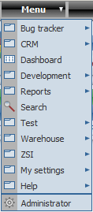
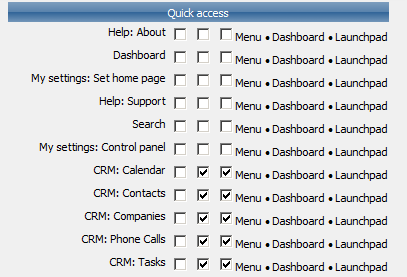
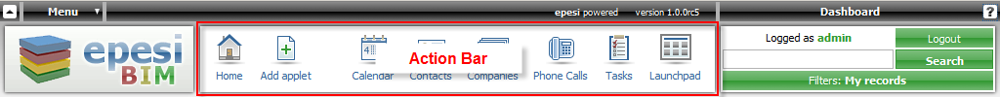

Menu
is located in the upper-right corner of the screen. It shows the list
of all modules accessible by the user in epesi. Menus can have
multilevel submenus.

To access frequently used modules a user can:
- Create Quick menu
- Customize icons in Action Bar on the Dashboard, and / or
- Add the module to the Launchpad
The customization is done via: Menu -> My Settings -> Control Panel -> Quick Access.

You will find a list of all installed modules there and you can turn then on/off using the checkbox. When finished clik on Save button in the Action Bar.
Note:
there is a limit to how many icons you can show in the Action Bar -
this depends on your screen resolution. For screen in 1024x768 pixels
you should be able to fit five (5) icons in addition to Home and
Launchpad icons which are permanent.
